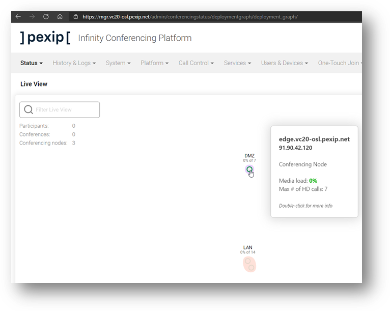
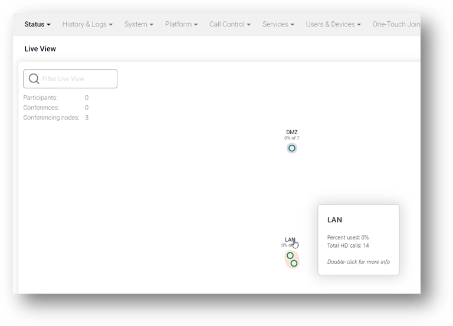

Suggested completion time: 15 minutes

Use section #3 and section #5 of the lab sheet.
Go to Platform --> Conferencing Nodes and click
Add Conferencing Node:
- On the Add Conferencing Node page, fill in the required fields using the details provided in (Lab sheet section #5).
- Name: Enter the name as the FQDN.
- Role: Transcoding Conferencing Node.
- This is not a mistake – the role will be changed in a later exercise.
- Hostname, domain, and IP details for
both interfaces.
- This Conferencing Node should be in the Enterprise DMZ location.
- Set the SIP TLS FQDN.
- Set the IPv4 static NAT address.
- Add a static route to the Management Node and LAN System Location’s subnet
(using the green plus). NOTE: If you forget to add a route to the management node,
you will NOT be able to add it after the node has been deployed, so will need to delete the node
configuration and guest VM, then redeploy.
- Save.
- On the Download Conferencing Node image page:
- Select Deployment type: Manual (ESXi 6.7 and above).
- You can leave the vCPU and vRAM settings at the default values. NOTE: in the real world, getting your VMs design correctly is critical, although these settings can be changed in OnPrem hypervisors after deployment, and cloud platforms, the selection is automatic as the compute instance types are pre-determined.
- Enter the SSH password, also Pexip123 to keep things simple (IMPORTANT NOTE: as of current Pexip software, we do not employ password input validation, so be careful with the password you type. You may need to redeploy the node if you lose, forget, or input the original password incorrectly).
- Click the Download button.
- When the download is complete, navigate back to the vCentre URL (Lab sheet section #3).
- Right Click on your host and select Deploy OVF template. This is now like
the steps you used when deploying the Management Node.
- Choose Local File, then select the OVA file you have just downloaded (which is likely to be
in the downloads folder), then click Next.
- Ensure the Virtual Machine name is as specified in section #5 of the lab
sheet. Ensure you are deploying to the correct vCentre and Data Centre for your area, then click
Next.
- Ensure you are deploying to the correct host (which should be correctly selected), then
click Next.
- Review the details and if you are happy, click Next.
- You should always deploy the nodes with Thick Provisioned vHDDs, to avoid any undesirable storage issues
later. The correct datastore should be shown (which will include the similar naming convention as your
host), then click Next.
- Set the VM network for each NIC as specified in your Lab Sheet (see section #5).
Leave the IP allocation as static and IPv4 – the IP address is burnt into the node configuration, then
click Next.
- Review the details and if you are happy, click Finish.
- When the node has been deployed, you will need to power it on. You can see all the VMs on your host by
clicking the VMs tab for the host. Right-click on the node, then choose
Power --> Power On.
- Permanently delete the OVA file from the downloads folder as we can run out of space on the RDP server!
- Ensure the new node communicates with the Management Node once it has fully booted. On the Pexip GUI,
navigate to Status --> Conferencing Nodes, and ensure the
Last Contacted, Last Updated and HD port count look OK.
Also check Status --> Locations, which should report that some
transcoding resource is available.
Screenshot 2: Demonstrate your working Pexip Infinity deployment
Gather screenshots of your deployment to show that you have successfully deployed your nodes into the correct
locations and add them to the documentation attached to this exercise, for example:
Live View showing DMZ node in transcoding role:

Live View showing LAN location capacity:
